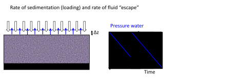
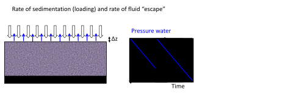

Next: 2.3 Horizontal stresses Up: 2. Subsurface Stresses and Previous: 2.1 Lithostatic gradient Contents
Pore pressure is not hydrostatic everywhere.
In fact, many times pore pressure is an unknown!
In a system of “connected pores” under hydrostatic equilibrium (water does not move), pore pressure increases hydrostatically.
Non-hydrostatic variations of pore pressure are usually located adjacent to low permeability barriers (e.g., shale formations) that do not allow pore pressure to achieve hydrostatic equilibrium fast enough compared to the rate of sedimentation and pore pressure relief.
Hence, pore pressure gets locked-in.
In the example in Figure 2.9, pore pressure is hydrostatic until
 ft.
Overpressure develops from
ft to
ft.
Overpressure develops from
ft to
 ft (likely due to a low permeability mudrock).
Pore pressure below
ft is quite different from hydrostatic!
ft (likely due to a low permeability mudrock).
Pore pressure below
ft is quite different from hydrostatic!
A convenient parameter to relate pore pressure and total vertical stress is the dimensionless overpressure parameter  :
:
 |
(2.13) |
In stationary conditions  cannot be larger than
cannot be larger than  , hence,
.
In onshore conditions
, hence,
.
In onshore conditions
 means hydrostatic pore pressure (
in hydrostatic conditions offshore, why?).
Reservoir overpressure is good for hydrocarbon recovery (more energy to flow to the wellbore), however, it may cause geomechanical challenges for drilling (kicks).
Parameter
means little effective stress.
We will see later that rocks have effective stress-dependent strength.
Hence, overpressure leads to weak rocks, especially if they are not well cemented, difficult to drill.
means hydrostatic pore pressure (
in hydrostatic conditions offshore, why?).
Reservoir overpressure is good for hydrocarbon recovery (more energy to flow to the wellbore), however, it may cause geomechanical challenges for drilling (kicks).
Parameter
means little effective stress.
We will see later that rocks have effective stress-dependent strength.
Hence, overpressure leads to weak rocks, especially if they are not well cemented, difficult to drill.
There are several mechanisms that may contribute to overpressure
 .
First, hydrocarbon accumulations create overpressure due to buoyancy.
Overpressure
is proportional to hydrocarbon column height
.
First, hydrocarbon accumulations create overpressure due to buoyancy.
Overpressure
is proportional to hydrocarbon column height  and difference in mass density of pore fluids
and difference in mass density of pore fluids

 |
(2.14) |
is measured from the hydrocarbon-brine contact line upwards.
A connected pore structure is needed throughout the buoyant phase.
Second, changes in temperature cause fluids to dilate. If the fluids cannot escape quickly enough, then pore pressure increases. Third, clay diagenesis can expell water molecules. For example, when montmorillonite converts to illite at high pressure and temperature, previously bound water molecules get “added” to the pore space. Under constant pore volume conditions, such addition will result in increases of pore pressure. Fourth, hydrocarbon generation also induces overpressure. With hydrocarbon generation, the original organic compounds transform in another phase which occupies more volume at the same pressure conditions. Overpressure in organic-rich shales is a good indicator of hydrocarbon presence.
Changes of vertical and horizontal stresses can induce pore pressure changes. Pore pressure increases when a rock/sediment is compressed (such that the pore volume decreases) under conditions in which the fluid cannot escape quickly enough. Figure 2.12 shows a schematic representation of this concept.
 and pore pressure increases a magnitude
and pore pressure increases a magnitude
 , where
, where  is the area of the top lid.
starts to transfer to the sediment, so that the water takes now just a fraction of the weight and pore pressure reduces accordingly.
so now the vertical effective stress on the top is
is the area of the top lid.
starts to transfer to the sediment, so that the water takes now just a fraction of the weight and pore pressure reduces accordingly.
so now the vertical effective stress on the top is
 . The fluid does not support the weight anymore
. The fluid does not support the weight anymore
 . The time it takes to arrive to this scenario depends on the tube and valve hydraulic conductivity and the overpressure generated by the weight .
. The time it takes to arrive to this scenario depends on the tube and valve hydraulic conductivity and the overpressure generated by the weight .
Imagine now a sediment layer saturated with water. There is an impervious layer at the bottom. Water cannot escape from the sides either. Water can only escape from the top.
An overburden is placed quickly on the sediment so that it compacts an amount  .
Initially, the pore pressure increases everywhere the same amount.
The pore pressure decreases preferentially at the top boundary (where it can flow) and the rate of pore pressure change is proportional to the hydraulic diffusivity parameter
.
Initially, the pore pressure increases everywhere the same amount.
The pore pressure decreases preferentially at the top boundary (where it can flow) and the rate of pore pressure change is proportional to the hydraulic diffusivity parameter
 |
(2.15) |
 is the constrained rock “stiffness” (inverse of 1D compressibility
is the constrained rock “stiffness” (inverse of 1D compressibility  ), is the sediment (vertical) permeability, and
), is the sediment (vertical) permeability, and  is the fluid viscosity.
The one-dimensional equation to this problem is
is the fluid viscosity.
The one-dimensional equation to this problem is
 |
(2.16) |
The solution of the partial differential equation above give us a characteristic time for which  of the pore pressure is relieved,
of the pore pressure is relieved,
 |
(2.17) |
 is the characteristic distance of drainage.
In our example is the thickness of the sediment layer, the longest straight path to a draining boundary.
is the characteristic distance of drainage.
In our example is the thickness of the sediment layer, the longest straight path to a draining boundary.
EXAMPLE 2.5: Calculate the characteristic time of pore pressure diffusion for a 100 m thick sediment with top drainage considering
(a) a sand with  100 mD and
100 mD and  1 GPa, and
1 GPa, and
(b) a mudrock with 100 nD and 1 GPa.
The water viscosity is 1 mPa s.
SOLUTION
(a) Sand:
 1.1 day.
1.1 day.
(b) Mudrock:
3000 years.

The example in Figure 2.16 is a measurement of pore pressure that utilizes measurements of porosity in mudrocks (Track 3) to predict overpressure (Track 4).
The concept is simple: the porosity of clay-rich rock decreases with effective stress (Figure 2.15).
Let us assume the following equation for such dependence
Under hydrostatic pore pressure conditions, vertical effective stress will always increase with depth. However, in the presence of overpressure, effective stress may increase less steeply or even decrease with depth. Hence, mudrocks with porosity higher than the porosity expected at that depth (in hydrostatic conditions) indicate overpressured sediment intervals (Figure 2.17).
 |
EXAMPLE 2.6: Calculate the pore pressure and overpressure parameter in a muddy sediment located offshore with porosity
 .
The total depth is 2000 m and the water depth is 500 m (assume a lithostatic gradient of 22 MPa/km below the seafloor).
Laboratory tests indicate a compaction curve with parameters
.
The total depth is 2000 m and the water depth is 500 m (assume a lithostatic gradient of 22 MPa/km below the seafloor).
Laboratory tests indicate a compaction curve with parameters
 MPa
MPa and
.
How much higher than expected hydrostatic value is the pore pressure?
and
.
How much higher than expected hydrostatic value is the pore pressure?
SOLUTION
First, calculate total vertical stress:
 MPa/km MPa/km km km MPa/km MPa/km km km MPa MPa |
Second, calculate effective vertical stress from using the measured porosity and Equation 2.18:
 MPa MPa |
Third, calculate pore pressure from
 , so
, so
 MPa MPa MPa MPa MPa MPa |
Hence, the overpressure parameter is
 |
Opposite to overpressure, “underpressure” occurs when pore pressure is lower than hydrostatic. The most common reason of underpressure is reservoir depletion. In compartmentalized reservoirs with poor water recharge drive, pore pressure may stay low for long periods of time. Reservoir depletion usually brings along lower total horizontal stresses which lower the fracture gradient and make drilling problematic because of decreased difficulty to create open-mode fractures.
![\includegraphics[scale=0.65]{.././Figures/split/2-17.pdf}](img231.svg) |
![\includegraphics[scale=0.65]{.././Figures/split/2-9.pdf}](img181.svg)

![\includegraphics[scale=0.50]{.././Figures/split/2-11.pdf}](img193.svg)
![\includegraphics[scale=0.50]{.././Figures/split/2-12.pdf}](img198.svg)
![\includegraphics[scale=0.60]{.././Figures/split/2-14.pdf}](img206.svg)
![\includegraphics[scale=0.65]{.././Figures/split/2-16.pdf}](img215.svg)